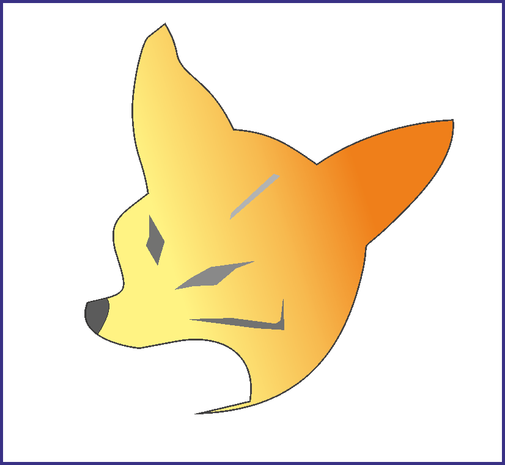

🧭 Set your XBASE_WORKSPACE
Choose your OS and copy the command to set a default xBase workspace folder.
# create workspace directory (example) mkdir -p "$HOME/xbase_workspace" # set for this session export XBASE_WORKSPACE="$HOME/xbase_workspace" # to persist: add to ~/.bashrc or ~/.zshrc (append) echo 'export XBASE_WORKSPACE="$HOME/xbase_workspace"' >> ~/.bashrc # or for zsh: # echo 'export XBASE_WORKSPACE="$HOME/xbase_workspace"' >> ~/.zshrc # reload shell or source file: # source ~/.bashrc
$HOME/xbase_workspace with any path you prefer.
# create folder (example)
New-Item -ItemType Directory -Force -Path "$env:USERPROFILE\xbase_workspace"
# set for current PowerShell session
$Env:XBASE_WORKSPACE = "$env:USERPROFILE\xbase_workspace"
# persist for current user (requires no admin)
[Environment]::SetEnvironmentVariable("XBASE_WORKSPACE", "$env:USERPROFILE\xbase_workspace", "User")
# you may need to restart shells / apps to see the updated variable
:: create folder (example) mkdir "%USERPROFILE%\xbase_workspace" :: set for current cmd session set XBASE_WORKSPACE=%USERPROFILE%\xbase_workspace :: persist (User-level) setx XBASE_WORKSPACE "%USERPROFILE%\xbase_workspace" :: note: new cmd windows will see the variable; restart apps if needed
setx truncates values over 1024 chars on older Windows. Use
PowerShell for complex paths.
Install xBase Compilers and GUI Libraries
Choose one or more compilers to work with. Click a card for quick links and setup hints.
 Visual FoxPro
Legacy Windows-only environment. Use for maintaining or porting classic VFP apps.
Quick hints
- VFP is Windows-only — install on Windows 7/10/11 or in a VM.
- Store projects under
$XBASE_WORKSPACE/VFP_Projects. - Consider VFPA/VFPX extensions for modern fixes and tools.
Harbour
Modern open-source xBase compiler — cross-platform, C-based, actively developed.
Quick install (example)
# clone and build (Linux example) cd $XBASE_WORKSPACE/HB_Projects git clone https://github.com/harbour/core harbour-core cd harbour-core make
HBQT
Use if you want native GUI with Harbour front-end powered by Qt.
Quick notes
- Install Qt (matching version) before building HbQt.
- Put HbQt projects in
$XBASE_WORKSPACE/HBQT_Projects. - Prebuilt binaries may speed up setup on Windows.
Install C/C++ Compilers
To work with Visual FoxPro, Harbour, and extensions at the native code level, you need the installed C/C++ compiler.
💻 Windows
Recommended compilers for Windows development.
Подробности
- MSVC Community — enables the compiler (2017–2022)
- MinGW-w64 — popular open-source GCC для Windows
- Clang — modern compiler C/C++/Objective-C
🐧 Linux
Standard development tools for Linux distributions.
Installation Commands
# Ubuntu/Debian sudo apt install build-essential # Fedora/RedHat sudo dnf groupinstall "Development Tools" # Clang (optional) sudo apt install clang
🍏 macOS
Apple's Clang-enabled development tools.
Installation Command
# Installing Developer Tools xcode-select --install
GCC + libc Setup для Linux
Detailed configuration of GCC and C standard libraries for compiling Harbour and related projects.
⚙️ GCC Toolchain
A complete set of GCC tools for compiling C/C++ projects.
Установка по дистрибутивам
# Ubuntu/Debian sudo apt update sudo apt install gcc g++ libc6-dev # Fedora/CentOS/RHEL sudo dnf install gcc gcc-c++ glibc-devel # Arch Linux sudo pacman -S gcc glibc # OpenSUSE sudo zypper install gcc gcc-c++ glibc-devel # Alpine Linux sudo apk add gcc g++ musl-dev
📚 C Standard Libraries
The C standard libraries required for compiling Harbour applications.
Additional libraries
# Дополнительные dev пакеты (Ubuntu/Debian) sudo apt install build-essential manpages-dev \ linux-libc-dev libc6-dev-i386 # For 32-bit compatibility on 64-bit systems sudo apt install gcc-multilib g++-multilib # Fedora equivalent sudo dnf install glibc-devel.i686 libgcc.i686 # Checking versions gcc --version ldd --version
🚢 Harbour-специфичная настройка
Оптимизация GCC для компиляции Harbour проектов.
Переменные окружения
# Добавьте в ~/.bashrc или ~/.zshrc export HB_COMPILER=gcc export HB_BUILD_OPTIM=yes # For static libraries export HB_BUILD_SHARED=no # Optimization for your architecture export CFLAGS="-O2 -march=native" export CXXFLAGS="-O2 -march=native" # Reboot shell source ~/.bashrc
Community & Discussions
To ask questions, suggest ideas, or discuss the development of a project, join our communities.: